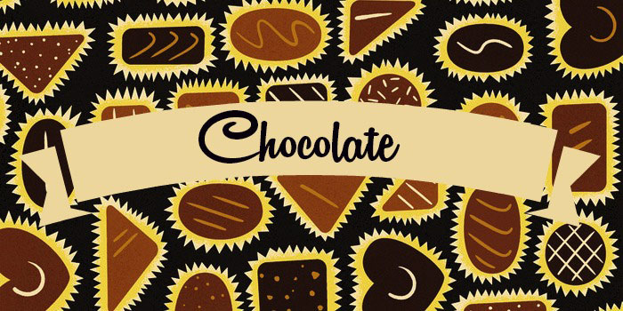
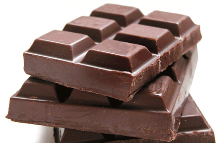
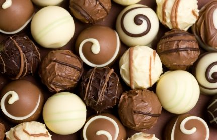
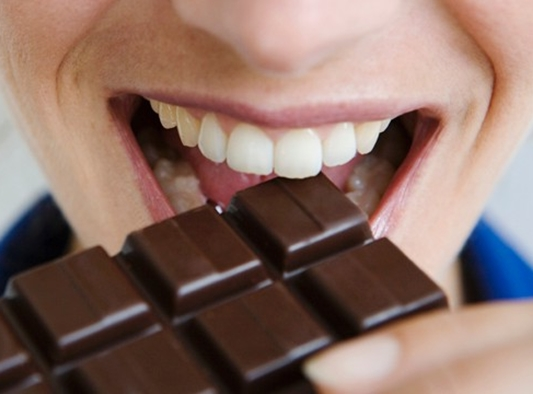
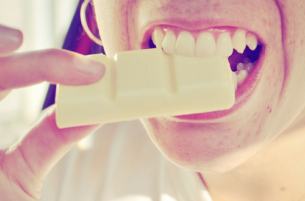
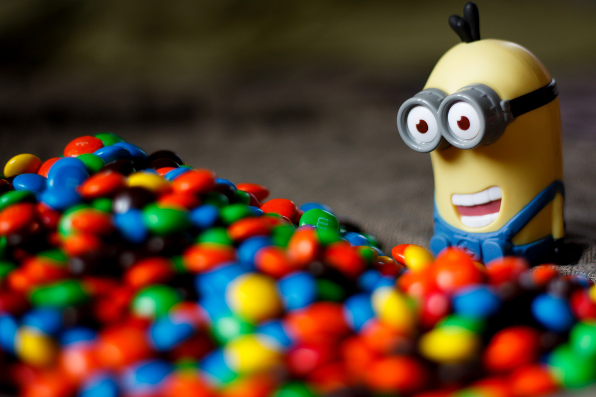

¿Qué es el chocolate? El chocolate es un dulce, esencial en la vida de muchas personas. Pero, ¿cómo se descubrió el chocolate?, ¿cómo llegó a Europa?, ¿y a España?, ¿cómo llegó a conocerlo todo el mundo?
Quieres resolver estas y mas preguntas??
Solo dale click a "LOADING"
"El Origen de una tradición..."
El chocolate es originario de América, pero tal y como lo conocemos hoy en día surgió en Europa. El cacao llegó a Europa desde México, sin embargo, parece ser que el árbol del cacao se originó en el Amazonas y el Orinoco. También había en la zona del Caribe y Pacífico centroamericano.
La primera civilización que cultivó el árbol del cacao fue la de los olmecas. Éstos y sus descendientes cultivaban el cacao de una forma especial. Los indígenas cortaban con sus machetes el tallo de los granos de cacao y los dejaban en el suelo húmedo de 5 a 10 días, hasta que se pudrían. Así conseguían que, cuando los lavaban y mordían, su sabor se volviera dulzón, su olor se acrecentara y se conservaran mejor. Este proceso se conoce hoy día como fermentación. Al descubrir este proceso, los indígenas mejoraron la cosecha de estos frutos .Cuando los granos se pudrían, les quitaban las envolturas, las lavaban y dejaban los granos al sol para que secaran y se tostasen. Finalmente, obtenían una masa de cacao, la cual la batían con agua fría, y a veces le echaban miel para volverla más dulce (en esa época, ellos no conocían el azúcar). A esa bebida le llamaron xocolatl.'Orígen del chocolate'
El chocolate no es un invento reciente. El chocolate (sinónimo de placer) nace de la semilla de un árbol, pero antes de que los aztecas y los mayas lo utilizaran como ofrenda a los dioses, los granos de cacao eran utilizados como moneda, se les llamaba cacahuatl y era con lo único que se podía pagar impuestos. Los cacahuatl no eran para ahorrarlos, sino para usarlos. Había muchos comerciantes americanos que siempre llevaban una bolsita de cacahuatl por si acaso. También había indígenas que falsificaban el cacahuatl metiéndole barro a las cáscaras vacías de cacao. Cuando los europeos llegaron y vieron el cacahuatl le pusieron como nombre Amígdala pecuniaria (almendra de cacao)
En el siglo III, la clase alta de los Mayas bebía el chocolate con fines ceremoniales. Preparaban el chocolate mezclando cacao con miel, pimentón, vainilla y chile, y también con otras especias.
Cuando llegaron, los españoles quedaron encantados con la bebida, pero en vez de prepararla con agua fría, la preparaban con agua hervida y la batían bien para que quedara espumosa. Entonces, el chocolate llegó a España y de España a toda Europa. Al principio el chocolate era muy caro y no era accesible a todo el mundo, pero su comercio se acrecentó y entonces el precio bajó. Cuando el chocolate llegó a Europa empezaron a mezclarlo con leche y azúcar para que estuviera más dulce. El chocolate que se tomaba al principio era muy amargo por eso Colón no supo apreciarlo. Colón se murió sin saber que había descubierto un continente y seguro que también sin saber el verdadero sabor del chocolate. En su cuarto viaje a América, un jefe indígena le obsequió con sus mejores pertenencias. Entre ellas estaba el cacao.
Sin embargo el cacao no fue debidamente reconocido hasta que Hernán Cortés llegó a México en 1519.
PREPARACION DEL "CHOCOLATE", CON MAQUINARIA
El Tostado:
Después de limpiar el cacao pasando los granos por diferentes máquinas donde les quitan las impurezas, estas se tuestan, unos más otros menos, para desarrollar su aroma. El proceso se lleva a cabo automáticamente a una temperatura de aproximadamente 130º, durante 15-20 minutos.
La molienda:
Se parten los granos tostados. Como las cáscaras pesan menos que los granos, se separan de estas soplando.
Los granos de cacao, todavía bastante gordos, son molidos varias veces hasta que quedan muy finos. Debido al calor, la manteca de cacao que hay en los granos se derrite y sirve para fabricar chocolate, para hacer cacao en polvo y es la pasta del cacao.
La mezcla:
En la amasadora se mezclan y se amasan los siguientes ingredientes: pasta de cacao, manteca de cacao y azúcar (si queremos hacer chocolate con leche también añadiremos leche).el resultado es una pasta homogénea, preparada para pasar por el molino.
Moler fino:
Bajo la presión de los rodillos de acero, las partículas sólidas se reducen consideradamente, por ejemplo el cacao y el azúcar.

El conchado:
En unas máquinas llamadas conchas se calientan normalmente de 1000 a 6000 Kg. de masa de chocolate a 80ºC. Durante este proceso se agita y se arrasa el cacao. Así consiguen que se evaporen los aromas no deseados. Durante 6 a 24 h. la masa de chocolate se refina en las conchas. Sin embargo, el chocolate aún no está preparado le falta el aroma puro y perfecto.
El templado:
En este proceso se debe cristalizar adecuadamente la manteca de cacao. Para ello ponen la masa de chocolate a una temperatura adecuada para que se cristalice el 1% de los cristales de forma estable. Los inestables están listos para moldearlos.
El moldeado
En este proceso se vierte el cacao líquido en moldes. Cuando se enfría la masa, y se cristalizan los cristales de grasa, obtenemos las tabletas. Finalmente se da la vuelta a los moldes y las tabletas caen en el transportador.
El envasado:
Finalmente, el chocolate es llevado por el transportador a las máquinas de embalaje y son envueltas en papel de aluminio. Después se realiza el envasado individual y se meten en cajas.
TIPOS DE "CHOCOLATE" MAS COMUNES

Chocolate negro
El chocolate negro (llamado también chocolate fondant; chocolate amargo; chocolate bitter; chocolate amer; chocolate duro) es el chocolate propiamente dicho, pues es el resultado de la mezcla de la pasta y manteca del cacao con azúcar, sin el añadido de ningún otro producto (exceptuando el aromatizante y el emulsionante más arriba citados). Las proporciones con que se elabora dependen del fabricante. No obstante, se entiende que un chocolate negro debe presentar una proporción de pasta de cacao superior, aproximadamente, al 50 % del producto, pues es a partir de esa cantidad cuando el amargor del cacao empieza a ser perceptible. En cualquier caso, existen en el mercado tabletas de chocolate negro con distintas proporciones de cacao, llegando incluso hasta el 99 %.
Se considera un alimento afrodisiaco porque gracias a su contenido de magnesio ayuda a combatir las contracciones musculares y dolores premenstruales. La fenilalanina que contiene ayuda a mejorar el estado de ánimo y a controlar los cambios de humor.
En algunos casos, se suele sustituir el azúcar por algún edulcorante (principalmente sucralosa). En este caso se utiliza para regímenes dietéticos.

Chocolate blanco
Artículo principal: Chocolate blanco
En el caso del chocolate blanco, estrictamente, no se trata de chocolate como tal, pues carece en su composición de la pasta de cacao, que es la materia que aporta las propiedades del cacao. Se elabora con manteca de cacao (por lo menos, el 20 %), leche (en polvo o condensada) y azúcar. Es un producto extremadamente energético y dulce (no posee regusto amargo). Visualmente muy atractivo, es un elemento decorativo muy usado en la repostería.
Desventajas
- Tiene alto contenido en grasas y carbohidratos, debido a que está preparado con leche y tiene menos del 70% de cacao en su composición.
- Produce migrañas si se consume en abundancia.
- Si se come en grandes cantidades; tanto en polvo, como en tableta o en cualquiera de sus variantes, puede tener efectos adversos en nuestro cuerpo a modo de obesidad, caries dentales o acné.
Para que sus propiedades funcionen sobre nuestro organismo es recomendable ingerir chocolate negro porque contiene más cantidad de cacao, el cual es el principal responsable de todos los beneficios ya mencionados. El chocolate ideal es el que contiene más del 70% cacao que de leche.

Ventajas
- Limita la fatiga.
- Mejora la concentración. Es mejor que el café y que el té negro.
- Produce una sensación de saciedad.
- Tiene una gran cantidad de magnesio y eso relaja los músculos, ayuda a formar nuevas células y a reparar el ADN.
- Facilita la circulación sanguínea.
- Nos libera del estrés. Genera endorfinas que son sustancias del cerebro para hacerte sentir bien y a activar tu ánimo.
- Segrega serotonina, una sustancia del cerebro que ayuda a disminuir la depresión y a calmarnos ante situaciones tensas.